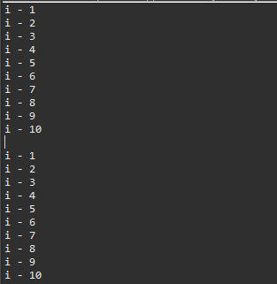
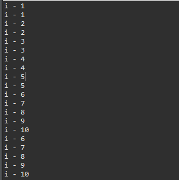
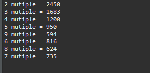
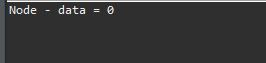
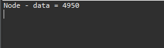
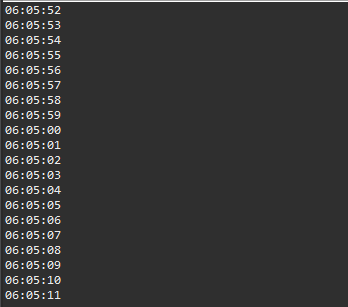

こんにちは。明月です。
この投稿はJavaのスレッド(Thread)を使う方法に関する説明です。
スレッド(Thread)とはプロセスの中で動いている最小の実行単位ということに定義させています。
プロセスとは我々がプログラムを実行して終了する時まで一連の処理ロジックという意味です。
改めてまとめるとプロセスの中では様々でスレッドを持つことができます。つまり、プロセスの中では並列に様々な実行単位を実行することができます。
説明が難しいです。
まず、簡単な繰り返しのロジックで1から10までコンソールに出力するプログラムを作成します。
public class Example {
// 実行関数
public static void main(String[] args) {
// 1から10までの繰り返し
for (int i = 1; i <= 10; i++) {
// コンソールに出力
System.out.println("i - " + i);
}
// 改行
System.out.println();
// 1から10までの繰り返し
for (int i = 1; i <= 10; i++) {
// コンソールに出力
System.out.println("i - " + i);
}
}
}

上の実行関数ではfor文を実行してコンソールに出力してまたfor文で1から10まで値をコンソールに出力します。
全然問題がないソースです。
でも私は上の二つのfor文を順番ではなく、同時に処理したいです。
// Runnableインタフェースを継承したクラス
class Func implements Runnable {
@Override
public void run() {
// 1から10までの繰り返し
for (int i = 1; i <= 10; i++) {
// コンソールに出力
System.out.println("i - " + i);
}
}
}
public class Example {
// 実行関数
public static void main(String[] args) {
try {
// スレッド割り当て
Thread th = new Thread(new Func());
// スレッド実行
th1.start();
// 1から10までの繰り返し
for (int i = 1; i <= 10; i++) {
// コンソールに出力
System.out.println("i - " + i);
}
} catch (Throwable e) {
// エラーが発生すればコンソールに出力
e.printStackTrace();
}
}
}

結果をみればコンソール結果が順番とおりに出ることではなく、Threadのrun関数とfor文の繰り返しが同時に実行されることを確認できます。
スレッドを使えば様々の処理を同時に処理できます。
public class Example {
// 実行関数
public static void main(String[] args) {
try {
// iは2から9まで繰り返す。
for (int i = 2; i < 10; i++) {
// 倍数設定(クロージャ)
final int multiple = i;
new Thread(() -> {
// 合算変数
int sum = 0;
// 0から99まで
for (int j = 0; j < 100; j++) {
// 倍数の場合
if (j % multiple == 0) {
// 合算変数に値を足す。
sum += j;
}
}
// 結果出力
System.out.println(multiple + " mutiple = " + sum);
}).start();
}
} catch (Throwable e) {
e.printStackTrace();
}
}
}

上の例は2から9までの倍数の合算を出力する例です。こんな簡単な処理式はThreadを使ってなくても早くできますが、Threadを使ったら同時に処理するのでもっと早くできます。(参考にThreadのインスタンスの生成時間があるので、必ずThreadや並列処理が速いことではありません。)
つまり、データベースの多いデータを処理する時にスレッドを使ったらもっと早く処理することができます。
スレッド(Thread)とはメインプロセスから独立でスレッドを作って実行される並列処理だと説明しました。でも、仕様によってメインプロセスからスレッドの計算を待てなければならないことがあります。
class Node {
// メンバー変数
private int data = 0;
// メンバー変数に値を足す関数
public void addData(int data) {
this.data += data;
}
// メンバー変数値をリターンする関数
public int getData() {
return this.data;
}
}
public class Example {
// 実行関数
public static void main(String[] args) {
try {
// Nodeインスタンス生成
final Node node = new Node();
// スレッド生成
Thread th = new Thread(() -> {
// 100まで繰り返し
for (int i = 0; i < 100; i++) {
// Nodeインスタンスにデータを合算
node.addData(i);
}
});
// スレッド実行
th.start();
// コンソール出力
System.out.println("Node - data = " + node.getData());
} catch (Throwable e) {
e.printStackTrace();
}
}
}

上のソースはThread中で0から99まで足す関数を呼び出しますが、メインプロセスで結果を見ると0です。
理由は並列処理なのでコンソール出力する時にスレッドのforの繰り返し文がまだ実行されてないからです。
それならスレッドが終わらなければならないですが、その時に使う関数がjoinです。
class Node {
// メンバー変数
private int data = 0;
// メンバー変数に値を足す関数
public void addData(int data) {
this.data += data;
}
// メンバー変数値をリターンする関数
public int getData() {
return this.data;
}
}
public class Example {
// 実行関数
public static void main(String[] args) {
try {
// Nodeインスタンス生成
final Node node = new Node();
// スレッド生成
Thread th = new Thread(() -> {
// 100まで繰り返し
for (int i = 0; i < 100; i++) {
// Nodeインスタンスにデータを合算
node.addData(i);
}
});
// スレッド実行
th.start();
// スレッドが終わるまでプロセスが待つ。
th.join();
// コンソール出力
System.out.println("Node - data = " + node.getData());
} catch (Throwable e) {
e.printStackTrace();
}
}
}

join関数はスレッドを呼び出したところから呼び出すことができる関数です。
スレッドをただ並列の処理だけではなく、どの時間間にスレッドを止まることもできます。
import java.text.DateFormat;
import java.text.SimpleDateFormat;
import java.util.Date;
public class Example {
// 実行関数
public static void main(String[] args) {
try {
// デートフォマート
DateFormat format = new SimpleDateFormat("hh:MM:ss");
Thread th = new Thread(() -> {
try {
// 0から99まで繰り返し
for (int i = 0; i < 100; i++) {
// 現在時間をコンソールに出力
System.out.println(format.format(new Date()));
// スレッドを1秒止まる。
Thread.sleep(1000);
}
} catch (Throwable e) {
e.printStackTrace();
}
});
// スレッド実行
th.start();
} catch (Throwable e) {
e.printStackTrace();
}
}
}

Thread.sleepはスレッド内部でスレッドを止まる関数です。パラメータはミリ秒基準で1000が1秒になります。
上のソースは現在の時間をコンソールに出力しましたが、1秒単位でスレッドを止まることにするから1秒たびにコンソールに現在時間が出力する結果になります。
スレッドはプロセスを並列処理が可能にするリソースです。並列処理はプログラムのパフォーマンス改善に効果がありませうが、いつもそんなことではありません。
一応、スレッドを生成することが速くありません。つまり、処理するデータ量が少ないか簡単な数式計算ならスレッドを生成しなくてプロセス側で処理することがもっと早くなります。
スレッドはプログラムで管理するリソース種類です。つまり、スレッドを生成や解除を管理しなければならないものです。スレッドが多くなると管理が難しくなるし、可読性にもよくないです。
そのことまでを考えて使えなければならないです。
ここまでJavaのスレッド(Thread)を使う方法に関する説明でした。
ご不明なところや間違いところがあればコメントしてください。
- [Java] 29. Reflection機能を使う方法(Class編)2019/09/18 20:02:14
- [Java] 28. 文字タイプ(CharacterSet)とエンディアン(endian)で変換する方法2019/09/17 20:22:02
- [Java] 27. ネットワーク通信(Socket)をする方法2019/09/16 23:42:46
- [Java] 26. ファイル(IO)を扱う方法(ファイル作成、ファイル修正、アクセス日付変更とIOをclose(リソース返却)する理由、Closableインタフェース)2019/09/13 20:03:58
- [Java] 25. Objectクラス(notify、waitの使い方)2019/09/13 00:58:31
- [Java] 24. Javaの同期化(Synchronized)とデッドロック(Deadlock)2019/09/11 23:06:09
- [Java] 23. スレッドプール(Threadpool)を使う方法2019/09/10 21:55:36
- [Java] 22.スレッド(Thread)を使う方法2019/09/06 22:30:49
- [Java] 21. アノテーション(Annotation)を使う方法2019/09/05 22:58:20
- [Java] 20. iterator(for-each)とStream APIを使う方法2019/09/04 20:11:28
- [Java] 19. ラムダ(Lambda)を使う方法2019/09/03 20:37:14
- [Java] 18. 匿名クラス(Anonymous class)とクロージャ(closure)2019/09/02 20:30:34
- [Java] 17. ジェネリックタイプ(Generic type)を使う方法2019/08/27 19:05:44
- [Java] 16. 例外処理(try~catch~finally, throw)を使う方法2019/08/26 23:40:29
- [Java] 15. 列挙型(バイナリデータビット演算子の使用例)2019/08/23 19:46:10
- [Design pattern] 1-1. シングルトンパターン(Singleton pattern)2021/06/09 19:40:05
- [Design Pattern] デザインパターンの紹介2021/06/08 20:42:36
- [Tools] Dbeaver(無料Sql queryブラウザツール)2021/04/28 18:26:49
- [Bootstrap] HTMLデザインのフレームワークのBootstrap紹介2020/07/30 19:06:36
- [Python] メール(smtplib)を送信する方法2020/07/27 18:38:43
- [Python] HttpConnection(requestsモジュール)でウェブサーバーで接続する方法2020/07/20 14:41:51
- [Python] Excel(openpyxl)を扱う方法2020/07/16 16:40:31
- [Python] ファイル圧縮、解凍(zipfile)する方法2020/07/14 19:14:22
- [Python] Apache cgiでPythonを使う方法2020/07/09 19:58:19
- [Python] Web serverを起動する方法(http.server)2020/07/09 00:13:13
- [Python] WebSocketを使う方法2020/07/07 17:29:18
- [Python] PythonとJavaのソケット通信する方法2020/07/03 18:35:50
- [Python] PythonとC#のソケット通信2020/07/01 19:28:22
- [Python] INI(環境設定ファイル)を扱う方法2020/06/30 18:26:01
- [Python] Jsonを扱う方法2020/06/29 19:18:15